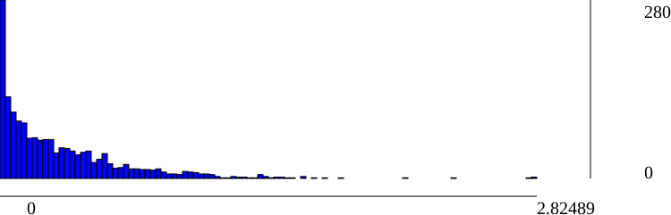

| IdView | Basename | #Observations | Residuals min | Residuals median | Residuals mean | Residuals max |
| 30772916 | ex4_0 | |||||
| 57582903 | ex4_2 | 208 | 1.10816e-05 | 0.172941 | 0.27946 | 2.82489 |
| 151871065 | ex4_10 | |||||
| 265677930 | ex4_5 | |||||
| 377902763 | ex4_9 | |||||
| 483328431 | ex4_8 | 206 | 0.000744193 | 0.241248 | 0.325043 | 2.37598 |
| 484647371 | ex4_3 | 157 | 0.000716701 | 0.222351 | 0.312484 | 1.65006 |
| 1369316392 | ex4_1 | |||||
| 1573809520 | ex4_6 | |||||
| 1664237988 | ex4_7 | |||||
| 1828385752 | ex4_4 | 267 | 0.000301193 | 0.201749 | 0.321232 | 2.78332 |
